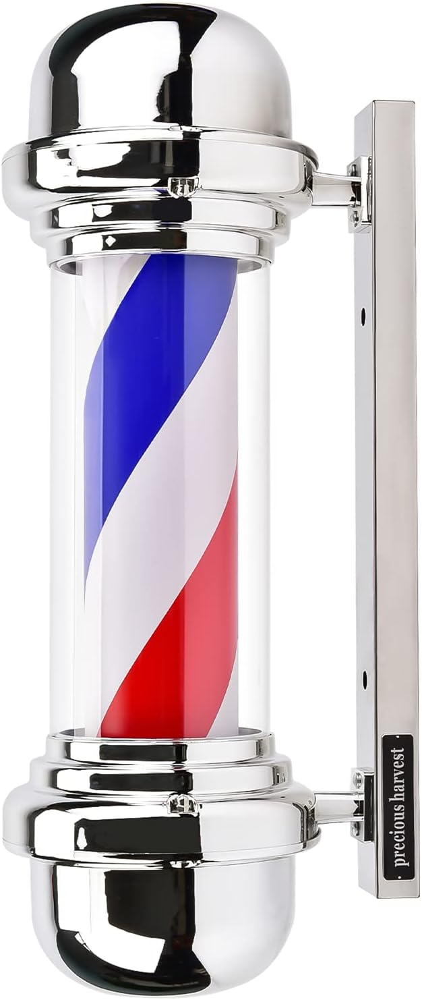

Fio condutor entre artigos
Os temas agrupam perguntas próximas para que não precises de andar a saltar entre leituras sem contexto.
Produtos e guias para posto de trabalho, organização de bancada e ritmo diário.
Cada tema reúne as dúvidas que surgem na prática, explica os critérios que fazem diferença e deixa espaço para chegares à tua conclusão com mais segurança.
Os temas agrupam perguntas próximas para que não precises de andar a saltar entre leituras sem contexto.
Os artigos deste tema focam-se no que faz diferença no dia a dia: conforto, manutenção, curva de aprendizagem e casos concretos.
Alguns links da loja são afiliados. Se comprares através deles, o OndeCortar.pt pode receber uma comissão por compras elegíveis.
O guia mais completo deste tema. Cobre o que importa perceber primeiro e deixa os restantes para quem quiser ir mais fundo.
O posto funciona melhor quando há uma base clara: ferramenta principal, manutenção, organização e higiene.

Para quem leu o essencial e ainda tem uma dúvida em aberto. Cada artigo responde a um ângulo diferente do mesmo tema.

O poste de barbeiro está em quase todas as barbearias, mas pouca gente sabe de onde vem ou o que significam realmente as suas cores.

A manutenção certa não precisa de ser complexa. Precisa de ser consistente e adaptada ao teu ritmo de uso.

Uma bancada organizada melhora acesso, higiene e ritmo de trabalho. O importante é escolher peças com utilidade real.
Para quando quiseres continuar por uma categoria específica, com o mesmo critério dos guias.
Seleção focada em ritmo de trabalho, manutenção simples e escolhas que ajudam o posto a funcionar melhor todos os dias.
Acessórios que resolvem problemas reais de posto, fachada e apresentação, em vez de servirem só para encher a bancada.